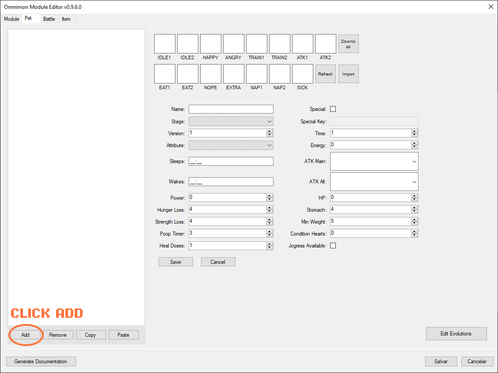

Module Editor
Create and customize your own Omnimon modules
System Requirements▼
These are the minimum system requirements to run the Module Editor:
- • Windows 7 SP1, 8, 8.1, 10 or 11
- • NET Framework 4.7.2 or higher
- • 200 MB of free disk space
- • 1 GB of RAM
Getting Started with the Editor▼
After starting the editor you should be presented with a list of avaliable modules, if not then use the button "Find" and locate the folder "modules" in your Omnimon Installation Directory.
If you get errors, make sure you selected the root folder of the modules, not the modules themselves.
When creating a new module, you will be asked to set a name for it, this name will be used as the folder name, make sure you don't use invalid characters. Double click a module or select and click "Edit" to edit a module.
Don't forget to save your changes and make backups!
The "Remove" button will permanently delete the selected module, so use it with caution.
Main View▼
-
1
The tab controls are used to navigate between different sections of the module editor.
- Module - General information, unlocks and backgrounds
- Pet - The pets and their evolution lines
- Battle - The module's adventure mode
- Item - The item editor
- 2 The main editor area where you can edit the content of the selected tab.
-
3
This is the main buttons panel.
- Save - Save data from all tabs into the disk.
- Cancel - Moves back to the Mod Selection form, this loses all changes not saved to the module.
- Generate Documentation - Overrides the module's documentation files using the currently saved data. Changes not yet saved are ignored.
Module Editor Tab - Main▼
Guide to Main Tab Fields
-
Flag:
This sprite will be used as a mark on all pets of this module, displayed on the pet's status window, Party Box, and Freezer Box. Standard size is 48x48. -
Logo:
The module's logo image sprite, used in the Egg Selection Scene. Standard size is 480x240, file namedlogo.png. -
BattleIcon:
This sprite is used in the Battle Menu for the module's adventure mode. Default size is 48x48, recommended to use a square sprite. -
Name:
The module's display name. -
Version:
The module's version number. -
Description:
The module's description text. -
Author:
The module's author name. -
Name Format:
Template string for pet sprite folder names. '$' is replaced with the pet's name. Example:$_dmccreates folders likeAgumon_dmc. -
Sprite Storage Format:
Defines how pet sprites are stored. Options include individual directories or ZIP files for better organization and compression. -
Evolution Requirements:
Sets the complexity and types of evolution criteria available in this module. Affects which evolution conditions can be used. -
Battle System Version:
Defines which battle mechanics and features are available. Newer versions support PvP battles and advanced combat features. -
Ruleset:
Defines the type of mini-game used in the module's Adventure Mode and the way traited eggs are obtained. Also defines the bonuses for power. -
Adventure Mode:
Enables or disables adventure mode gameplay features. Required to add the module's Adventure Mode to the Battle Menu. -
Care Meat Weight Gain:
Weight increase when feeding meat/hunger food. Applied only to pets above stage 1 and below 99 weight. -
Care Meat Hunger Gain:
Amount of hunger restored per meat feeding. Pets can't eat when hunger equals stomach capacity or during overfeed timer. -
Care Meat Care Mistake Time:
Minutes of empty hunger before triggering a care mistake. Timer resets when pet is fed. -
Care Overfeed Timer:
Minutes pet refuses food after trying to overfeed. During this time, pet will display 'nope' animation when offered food. -
Care Condition Heart:
When enabled, uses condition hearts system instead of mistake counter. Each care mistake reduces condition hearts. -
Care Can Eat Sleeping:
Allows pets to eat food while in nap state. When disabled, feeding attempts during sleep hours will fail. -
Care Back To Sleep Time:
Minutes before pet automatically returns to sleep after being woken up during sleep hours. -
Care Enable Shaken Egg:
Allows eggs to be "shaken" (shake_counter >= 99) for evolution bonuses. -
Care Protein Weight Gain:
Weight increase when feeding protein/strength food. Applied only to pets above stage 1 and below 99 weight. -
Care Protein Strengh Gain:
Amount of strength restored per protein feeding. Also added when training. -
Care Protein Dp Gain:
DP is your stamina, gained every 4th protein feeding, if current DP is below maximum energy. -
Care Protein Care Mistake Time:
Minutes of empty strength before triggering a care mistake. Timer resets when pet receives protein. -
Care Protein Overdose Max:
Maximum protein overdose counter that affects battle sick chance. Each protein feeding increases overdose. -
Care Protein Penalty:
Protein Penalty affects battle sick chance. Determines the amount of each penalty for Protein Overdose in percent. -
Care Disturbance Penalty Max:
Maximum penalty from sleep disturbances that affects battle sick chance. Each disturbance adds 2 to penalty. -
Care Sleep Care Mistake Timer:
Minutes of sleep deprivation before triggering a care mistake. -
Training Effort Gain:
Effort points gained when winning training sessions. At 16+ effort, pets gain significant power bonuses. -
Training Strengh Gain:
Strength increase from training sessions (both win and lose). -
Training Weight Win:
Weight loss when winning training. -
Training Weight Lose:
Weight loss when losing training. -
Traited Egg Starting Level:
Initial level for pets hatched from traited eggs. Higher levels provide stat bonuses. -
Reverse Atk Frames:
Swaps attack animation frames (ATK1↔ATK2, TRAIN1↔TRAIN2) during sprite loading. -
Battle Base Sick Chance Win:
Base percentage chance of getting sick after winning a battle. -
Battle Base Sick Chance Lose:
Base percentage chance of getting sick after losing a battle. -
Battle Atribute Advantage:
Percentage advantage when pet's attribute matches favorably against enemy. -
Battle Global Hit Points:
When > 0, makes the module ignore pets' individual Health Points. -
Battle Sequential Rounds:
Controls battle area progression mechanics. When enabled, battles progress through rounds sequentially. -
Death Max Injuries:
Maximum injuries before death. Injuries are gained from sickness, poop neglect, and battle losses. -
Death Care Mistake:
Total care mistakes before death. Includes hunger, strength, sleep, and sickness mistakes. -
Death Sick Timer:
Minutes of continuous sickness before death. -
Death Hunger Timer:
Minutes of empty hunger before death. -
Death Starvation Count:
Number of hunger depletion cycles before death. -
Death Strength Timer:
Minutes of empty strength before death. -
Death Stage45 Mistake:
Mistakes threshold for stage 4-5 pets after evolution time expires. -
Death Stage67 Mistake:
Mistakes threshold for stage 6+ pets after 48 hours of age. -
Death Save By B Press:
Enables death prevention by B button press. Gives a 1 minute window to save pet from death conditions. -
Death Save By Shake:
Enables death prevention by device shaking. Gives a 1 minute window to save pet through physical interaction.
Module Editor Tab - Unlocks▼
Here its possible to manage in-game secrets and unlocks for your module.
Use the Add/Remove buttons to change the number of unlocks in the table. Click a cell to edit its value.
- • Name: This is the internal key for the unlock, it needs to be unique inside a module.
- • Label: The display name for the unlock, this is what will be shown in the game in the Unlocks section of the Settings Menu.
-
•
Type: The type defines in which part of the game the unlock can be obtained.
- Egg - Obtained through hatching an egg of a specific version. Ignores Area, Amount and To.
- Adventure - Obtained by defeating the boss in the module's adventure mode of a specific area. Ignores Version, Amount and To.
- Evolution - Obtained by reaching a specific evolution stage. Ignores Version, Area and Amount.
- Digidex - Obtained by discovering a certain number of unique pets. Ignores Version, Area and To.
- Versus - Obtained by participating in or winning versus battles. Unlocks content related to competitive battle modes.
- PvP - Obtained by winning Player vs Player battles. Requires specific numbers of PvP victories.
- Group - Obtained through group activities or multi-pet requirements. Unlocks content requiring multiple pets.
- • Version: The requirements that must be met to obtain the unlock.
- • Area: The area where the unlock can be obtained.
- • Amount: The number of records needed to obtain the unlock.
- • To: The unlock can be obtained by reaching a specific evolution stage.
Module Editor Tab - Backgrounds▼
Here you can manage the backgrounds of your module, including their properties and settings.
Use the Add/Remove buttons to change the number of backgrounds in the table. Click a cell to edit its value.
Use Refresh to validate the background list - there are 2 validations checked:
- • Does the background have a HiDefinition version? (Optional)
-
•
Does the background have a valid sprite? (Required) A valid sprite is named as
bg_NAME(_day/_dusk/_night)(_high)and is located in the background folder. - • Name: The name of the background, this is used directly to get the background file inside the module. Don't use special characters and make it unique.
- • Label: The display name of the background, this is what will be shown in the game in the Backgrounds section of the Settings Menu.
- • Day/Night: If enabled, the game will expect different background sprites for day, dusk, and night, they should be named with _day/_dusk/_night suffix.
bg_forest- A simple background without support for different times of day (Day/Night off).bg_forest_day- The day version of the forest background.bg_forest_dusk- The dusk version of the forest background.bg_forest_night- The night version of the forest background.bg_forest_high- The high definition version of the forest background.
Use "Import" to load an existing background asset into the editor. If the file is named with background expected naming conventions, it will be imported with its settings already configured.
Examples:
Pet Editor Tab▼
Here you can manage the pets of your module, including their evolution lines and properties.
To the left, you will see a list of all pets in the module, select an existing pet to edit its properties. Or use buttons Add, Remove, Copy, Paste.
To create a new pet the easy way, you can follow these steps:
- •Click in Add.
- •Select the desired stage for the new pet. The stage selection creates a new pet from a template, all values can be changed afterwards.
- •Fill the name of the new pet.
- •Click on Save! All other functionalities work only on saved pets!
- •Click the Download button, it copy the saved pet's name to the clipboard and open the sprite database (https://dmc-sprite-database.vercel.app/)
- •Press Ctrl+V to paste the pet's name in the search bar.
- •Click on Download on the sprite pack of your choice.
- •Go back to the Editor and click "Import". If done correctly, the sprites will be loaded.
- •Customize the stats as needed. And click on save to apply the changes.
Here's a list of pet properties you can edit:
- • Name: The name of the pet. Used for sprite folder lookup. Must be unique and not contain special characters.
- Directory Format: Traditional folder structure (e.g.,
Agumon_dmc/containing individual PNG files) - ZIP Format: Compressed archive (e.g.,
Agumon_dmc.zipcontaining all sprite frames) - Fallback System: The game automatically checks module folders first, then falls back to global assets folder
- • Stage: Evolution stage: 0=Egg, 1=Baby, 2=Baby II, 3=Child, 4=Adult, 5=Perfect, 6=Ultimate, 7=Super, 8=Super+.
- • Version: Version roster this pet belongs to. Different versions may have different evolution paths and requirements.
- • Time: Evolution timer in hours. Pet evolves when this time expires (if evolution requirements are met).
- • Attribute: Pet's attribute: Free, Data, Virus, or Vaccine. Determines type advantage in battle (Data > Virus > Vaccine > Data).
- • Energy: Maximum DP (energy) capacity. DP is consumed during battles and training.
- • Sleeps: Sleep start time (HH:mm). Pet will call to be put to sleep at this time.
- • ATK Main: Primary attack animation ID. Used for main battle attacks and training.
- • Wakes: Wake up time (HH:mm). Pet will wake automatically at this time.
- • ATK Alt: Alternative attack animation ID. Used for secondary attacks or special moves.
- • Power: Base battle power. Higher power increases damage output and battle effectiveness.
- • HP: Health Points. Higher HP allows the pet to survive more damage in battles. If set to 0, default values will be used.
- • Hunger Loss: Rate of hunger depletion over time (in minutes). Hunger will decrease by 1 at this interval.
- • Stomach: Hunger capacity. Determines how much food the pet can eat before becoming full.
- • Strength Loss: Rate of strength depletion over time (in minutes). Strength affects power and evolution.
- • Min Weight: Minimum weight threshold. Weight can cause sickness when it reaches 99g. Can be lost through training, but never below the minimum.
- • Poop Timer: Time between pooping cycles (in minutes). Neglecting poop cleanup causes care mistakes.
- • Condition Hearts: Condition/health hearts. Represents overall care quality and affects evolution.
- • Heal Doses: Number of medicine doses needed to cure sickness.
- • Jogress Available: Can participate in Jogress (fusion) evolution with another compatible pet.
- • Special: Marks this pet as special. Special pets may have unique evolution or unlock requirements.
- • Special Key: Unique identifier for special evolution or unlock conditions. Only enabled if Special is checked.
- • Unlocks: List of unlock conditions for this pet. Separate multiple conditions with commas.
- • Egg Group: Determines compatible egg types for this pet. Separate multiple groups with commas.
- • Rarity: Rarity level for this pet. Affects availability and encounter rates in the wild.
- • Base EXP: Base experience points gained when this pet is used in battle.
- • Max Level: Maximum level this pet can reach. Experience requirements increase with each level.
-
•
Type: Pet type, affects performance in battles and training. Types include:
- Normal - Balanced stats and abilities.
- Attack - Higher power and attack-related stats.
- Defense - Higher HP and defense-related stats.
- Speed - Higher speed and evasion-related stats.
- Special - Unique abilities and higher base EXP.
📦 Sprite Storage Formats
Important: Pet sprites can now be stored in multiple formats:
The editor and game support both formats seamlessly. ZIP files offer better organization and smaller file sizes.
Pet Editor Tab - Evolution Editor▼
After adding a new pet, you can use the Evolution Editor to define its evolution requirements.
To the left you are again presented with the Pet List, but this time, a combo box filters your pets by Version. Pets can only evolve into other pets of the same version., This means that Jogress evolutions between versions need to duplicate the evolution result to work.
First drag the pets from the Pet List into the Evolution Editor area to begin defining their evolution paths. You can click in "Organize" to adjust the layout automatically.
Click the "Toggle Connection" button to enable the Connection Tool
Click the "SOURCE" pet and then click the "TARGET" pet to create a connection between them.
Disable the Connection Tool by clicking the "Toggle Connection" button again.
Click the Criteria Box to define the evolution conditions.
Here you can edit the evolution conditions, by default, empty and 0 fields will be ignored. You can use value 999999 to indicate infinite. Below is a complete list of all available evolution criteria:
🎯 Evolution Criteria Reference
Basic Requirements:
- mistakes - Care mistake count range [min, max]
- condition_hearts - Condition hearts range (alternative to mistakes)
- training - Effort/training level range
- level - Pet level range
- weight - Pet weight range in grams
- overfeed - Overfeed count range
- sleep_disturbances - Sleep disturbance count range
Battle & Competition:
- battles - Total battle count range
- win_count - Total wins range
- win_ratio - Win percentage range (0-100)
- pvp - PvP wins range
- stage-5 to stage-9 - Enemies defeated at specific stages
Achievement & Progress:
- quests_completed - Quest completion count range
- trophies - Trophy count range
- vital_values - Special achievement parameter range
Special Conditions:
- special_encounter - Boolean: requires special encounter flag
- time_range - Real-world time requirement ["HH:MM", "HH:MM"]
- jogress - Special evolution requiring two pets
- item - Evolution requiring specific items
Note: All numeric criteria use ranges [minimum, maximum]. If a pet doesn't meet ANY of the specified criteria, the evolution will not occur.
Once you have defined the evolution criteria, save your changes to apply them to the module.